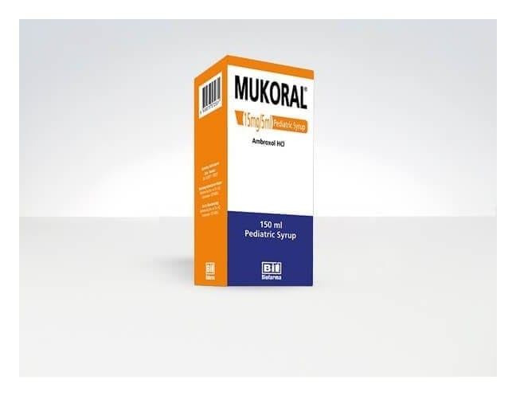

Mukoral 15 mg/5 ml Pediatrik Şurup, 150 ml

Ne için kullanılır
KT · Bölüm 1• MUKORAL®, balgam salgısını sulandıran ve salgılanmasım kolaylaştıran balgam söktürücü bir ilaçtır. Bu sayede balgamın kolayca atılmasını sağlayarak solunum güçlüğünü giderir ve öksürüğü azaltır. • MUKORAL®, 100 ve ISO ml şurup içeren, kahverengi cam şişede, 2,S ve S mI'lik işaretli plastik ölçeği ile birlikte sunulur. Açık sarı, meyve kokulu, berrak şurup görünümündedir. • MUKORAL ®, balgamın koyu ve yapışkan olması ile birlikte olan ani sÜTeğen solunum yolu hastalıklarında balgam söktürücü olarak kullanılır.